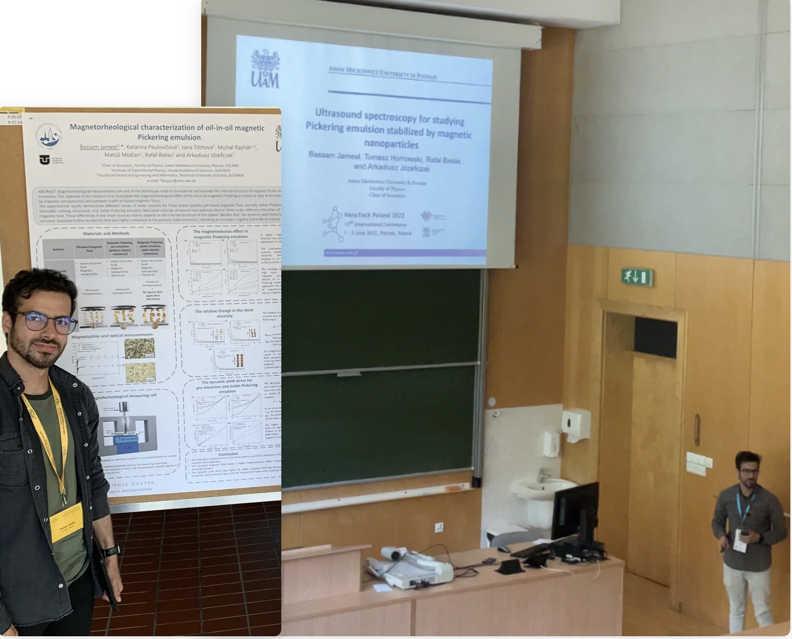

Peer-reviewed publications and conference talks on ultrasound waves, acoustic scattering, magnetic fluids, and Pickering emulsions.

Total presentations: 12 — 1 invited talk, 8 oral presentations, 4 poster presentations. Selected presentations below.